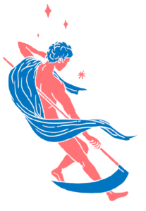
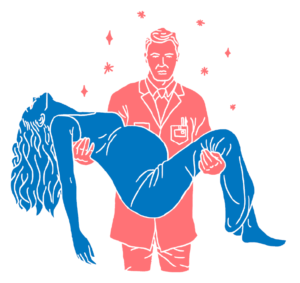

{Fanzine#2} Gioco in società: il Dottor Semmelweis
Céline, igiene, Latour, letteratura, Semmelweis

Questo è il secondo articolo della nostra fanzine dedicata ai MICROBI, il tema che abbiamo affrontato a Scienceground 1.5. Trovi gli altri articoli e l’indice della fanzine qui:
- Un segnale nel rumore
- Gioco in società: il Dottor Semmelweis
- Gli infetti della Terra
- Intessere mondi
- That’s symbiosis, baby: arte, biologia e altre storie
[Illustrazioni di Darco Mal Prà]
C’è una lavagna nell’angolo ombreggiato del cortile, sopra c’è scritto “dr. Semmelweis h10” in bella grafia. Le persone sedute attorno sono tante da mettere un sorriso, e tutte intente a guardare tredici pollici di schermo appoggiato su uno sgabello: scorre il video di una partita di GO, nessuno ci sa giocare. Così, quando chiediamo chi sta vincendo, rimbalzano le idee più fantasiose finché non arriva la sentenza: «non possiamo dirlo se non sappiamo le regole». La scienza sta qui: si tratta di giocare un gioco di cui non si sanno le regole, e tentare di immaginarle. Lo ha fatto anche il protagonista del libro che leggiamo oggi, confrontandosi con un’avversaria che poi, in varie forme, è quella di tutti: la morte.
Il dottor Ignác Semmelweis nasce all’inizio dell’800 in Ungheria, ma per i suoi studi e il suo mestiere di medico si trasferirà presto a Vienna, dove per una serie di coincidenze sarà assegnato al reparto maternità della clinica del dottor Klin (come lo chiama Céline) e si troverà ad osservare “l’esperimento perfetto”. Nel cortile adesso si legge Céline (Céline, 1975):
Due padiglioni per il parto, di costruzione identica, contigui, sorgevano in quell’anno 1846 in mezzo ai giardini dell’Ospizio generale di Vienna. II professor Klin ne dirigeva uno; l’altro, da quasi quattro anni ormai, era posto sotto la direzione del professor Bartch. Quel martedì, quando suonarono le quattro, il padiglione Bartch chiuse le porte, quello di Klin aprì le sue…
A partire da quel momento la sala d’accettazione diventa un rogo di ardente desolazione, dove venti famiglie singhiozzano, supplicano… trascinando spesso, e a forza, la moglie o la madre che accompagnavano. Preferiscono quasi sempre farla partorire in strada, dove i pericoli sono in realtà di gran lunga minori.
La sala parto da luogo di nascita e vita diviene luogo di morte: in un padiglione la percentuale di morti da “febbre puerperale” è da anni molto più alta (fino a 40%) rispetto all’altro (mediamente 1%), tanto che le donne preferiscono partorire in strada piuttosto che farsi ricoverare da Klin.
Ci poniamo la prima domanda: come avremmo reagito da medici dell’epoca?
«Con fatalismo», risponde una voce dal cerchio, «non avremmo nemmeno provato a fare delle ipotesi!». In effetti è proprio questa la parola che sblocca il ragionamento di Semmelweis e il nostro: ipotesi. Se la comunità scientifica dell’epoca si era arresa, accogliendo il fatto come inevitabile, Semmelweis sceglie una strada diversa: sente la responsabilità di quelle morti, è deciso a capire se sono evitabili, vuole compiere un passo ulteriore e inizia a vagliare le ipotesi del suo tempo:
La causa è da ricercare in cambiamenti cosmici, tellurici o atmosferici di qualche tipo.
Un ordine di grandezza in più nella mortalità è raggiunto all’interno dello stesso ospedale.
——————————————————————————————————————————————–
La causa non è esterna Da Klin il prete passa spesso e suona una campanella, questo agita le donne e le fa infettare.
Evitare che le donne vedano e sentano il prete non ha cambiato la situazione.
——————————————————————————————————————————————–
La causa dell’infezione non è psicologica Da Bartch le donne partoriscono sempre sul fianco mentre da Klin distese.
Introdurre la posizione laterale nel padiglione di Klin non ha ridotto la mortalità.
——————————————————————————————————————————————–
La causa non sta nella posizione della puerpera durante il parto
Mentre abbiamo un metodo per stabilire che un’ipotesi è falsa, ne abbiamo uno per formulare un’ipotesi nuova? Cala il silenzio, si sente il rumore degli ingranaggi del pensiero ma fatichiamo a trovare una risposta. Qualcuno dice che no, non può esistere un metodo unico dal momento che le ipotesi possono provenire da ambiti diversi o arrivare come intuizioni.
Siamo di fronte a un problema particolarmente importante per la filosofia della scienza (Hempel, 1966), dubitiamo di riuscire a risolverlo in questa sede. Andiamo avanti continuando a seguire il nostro Semmelweis che si muove a tentoni nel buio, finché un un esperimento non gli illumina la via.
Le levatrici che facevano il loro tirocinio da Bartch vengono scambiate con gli studenti di Klin. La morte segue gli studenti, le statistiche di Bartch diventano angosciose e Bartch sconvolto rimanda gli studenti al posto da dove erano venuti. Semmelweis ora sa (e anche gli altri, volendolo) che gli studenti svolgono un ruolo di importanza primaria in quel disastro.
Siamo a un tassello fondamentale del ragionamento scientifico, si tratta di considerare ogni possibilità e valutarla attraverso un rigido processo di selezione: le ipotesi vanno messe alla prova, sfidate e passate al setaccio finché non si trova qualcosa che le smentisca, e a quel punto partire da lì con una nuova spiegazione.
Se l’esperimento ha verificato che la mortalità dipende dagli studenti, le conclusioni a cui giungono i colleghi di Semmelweis hanno ancora dei difetti:
Gli studenti sono inesperti, operano male e provocano lacerazioni che causano l’infezione.
Lacerazioni ben peggiori occorrono naturalmente durante il parto.
——————————————————————————————————————————————–
La causa non è la maldestrezza degli studenti nel visitare e assistere il parto
Nella comunità dell’epoca si fa quindi strada una nuova idea: la presenza di troppi studenti stranieri. Ecco che intervengono nuove variabili a complicare l’equazione: uno scienziato – o aspirante tale – non è un elemento neutro. Al contrario si tratta di una persona che porta con sé una storia, un vissuto, una provenienza geografica… la scienza non è mai impermeabile alle questioni umane, una società razzista produrrà un sapere razzista. Vengono cacciati gli studenti stranieri; ed ecco che per qualche settimana il tasso di mortalità, effettivamente, scende: sembra la prova della correttezza dell’ipotesi, ma basta questo per stabilire che un effetto corrisponda a una certa causa, che un fatto sia correlato a un altro? Per saperlo oggi ci viene in aiuto la statistica, una disciplina che offre strumenti che il dottor Semmelweis non aveva a livello tecnico ma per i quali nutriva già una viva sensibilità: quando la mortalità riprende a risalire, risulta chiaro che il calo fosse dovuto a una fluttuazione casuale, gli studenti stranieri non c’entrano. Piuttosto, a Semmelweis viene in mente come a volte capiti che qualche studente muoia in seguito a tagli procuratisi durante le dissezioni che si fanno sui cadaveri.

In quell’istante si trova così vicino alla verità che sta per circoscriverla. Vi è ancor più vicino quando pensa di far praticare il lavaggio delle mani a tutti gli studenti prima che affrontino le donne incinte. Ci si domanda il «perché» di questa misura, a cui nulla corrispondeva nello spirito scientifico dell’epoca. Era una pura creazione. Comunque egli fece disporre dei lavabi alle porte della clinica e diede ordine agli studenti di pulirsi accuratamente le mani prima di ogni investigazione o manovra su una partoriente.
Evidentemente Klin chiese una spiegazione di quel lavaggio preliminare che gli parve, a priori, assolutamente ridicolo. Forse pensò addirittura a una vessazione… Semmelweis, d’altra parte, era proprio incapace di fornirgli una risposta plausibile o una teoria adeguata, perché andava per tentativi. Klin rifiutò seccamente. Semmelweis, snervato da tante veglie estenuanti, s’infuriò, dimenticando il rispetto che doveva malgrado tutto al peggiore dei suoi maestri. Certo, l’occasione era troppo bella perché Klin se la lasciasse sfuggire. L’indomani, 20 ottobre 1846, l’incarico a Semmelweis fu brutalmente revocato.
Licenziato per aver gettato le basi dell’antisepsi. Il sole nel cortile si è alzato e adesso illumina facce basite, alcune indignate. «Era l’altro ieri e non si lavavano le mani in ospedale!». Ma ha senso lavarsi le mani in un mondo senza microbi?
Passano mesi e Semmelweis, grazie all’intercessione e al sostegno di alcuni tra i suoi collaboratori, riesce a tornare a Vienna; nel frattempo il suo amico e collega Kolletchka è morto in seguito a un’autopsia.
Poiché, pensò, Kolletchka è morto in seguito a una puntura cadaverica, sono dunque gli essudati prelevati sui cadaveri che bisogna incriminare nel fenomeno del contagio. In quanto ai particolari del contagio, credette subito di saperli. «Sono le dita degli studenti, contaminatesi nel corso di dissezioni, che portano le fatali particelle cadaveriche negli organi genitali della donna incinta, soprattutto all’altezza del collo dell’utero». Tale conclusione si imponeva sulla base di tutte le osservazioni cliniche fino allora raccolte. Quelle infime particelle cadaveriche, il cui semplice contatto riteneva più che sufficiente a provocare l’infezione puerperale, non erano commensurabili, l’Istologia non sapeva ancora colorarle in modo da renderle visibili al microscopio. Solo dall’odore esse erano dunque percepibili.
Semmelweis a questo punto tenta un nuovo azzardo e ottiene, come assistente del dottor Skoda, di poter sperimentare la sua teoria: gli studenti di Klin vengono scambiati con le levatrici di Bartch, e la mortalità da quest’ultimo subisce un incremento del 18% sul mese precedente. Semmelweis impone il lavaggio delle mani con cloruro di calce per eliminare l’odore delle particelle cadaveriche: la mortalità cala dal 27% al 12%, ma non basta ancora.
La partita continua:
Egli temeva il «pressappoco», voleva la verità intera. Si sarebbe detto che durante quelle settimane la morte volesse giocare d’audacia con lui. Ma fu lui ad averla vinta.
Avrebbe toccato i microbi senza vederli.
Rimaneva ancora da distruggerli. Mai si fece meglio. Ecco i fatti: nel mese di giugno, entrò nel reparto di Bartch una donna ritenuta gravida, in base a sintomi mal verificati, Semmelweis l’esamina a sua volta e scopre su di lei un cancro al collo dell’utero, poi, senza pensare a lavarsi le mani, pratica subito dopo l’esplorazione su cinque donne nel periodo della dilatazione. Nelle settimane che seguono, le cinque donne muoiono di infezione puerperale tipica. Cade l’ultimo velo. Si è fatta luce. «Le mani, per semplice contatto, possono infettare» egli scrive… nel mese seguente la mortalità da puerperio viene quasi annullata e si riduce per la prima volta alla cifra attuale delle migliori maternità del mondo: 0,23%!
Attraverso nuovi esperimenti, la teoria si affina sempre di più: le particelle del contagio non sono soltanto “cadaveriche”, si trovano anche nei fluidi corporei. I microbi entrano nel gioco!

Céline non ha però finito di districare tutte le trame che può seguire l’incedere scientifico, che poi è incedere umano. Se infatti ora digitassimo “microbi” su un qualunque motore di ricerca, vi troveremmo associato il nome di Louis Pasteur, di 30 anni successivo a Semmelweis: la correttezza del metodo non è abbastanza affinché una teoria venga accolta dalla società.
Si dà libero sfogo a tutte le gelosie, tutte le vanità. Il personale dell’ospedale, poi gli studenti, dichiarano di essere stanchi «di quei malsani lavaggi» al cloruro di calce, ai quali giudicano ormai inutile sottoporsi.
Questa volta le passioni superano ogni limite: tutti si caricano d’insulti e addirittura di botte nell’arengo di quella degna compagnia. Il ministro di conseguenza proibisce alla Commissione di riunirsi e al tempo stesso ordina a Semmelweis di abbandonare Vienna al più presto.
Guido Ceronetti, nel saggio che troviamo in conclusione al libro di Céline, fa notare come all’epoca per le persone fossero inconcepibili due fattori che, invece, la teoria di Semmelweis metteva in luce: il fatto che potesse essere il medico a portare la malattia — il dottore rappresentava una figura pura, era portatore di salvezza e massimo detentore della conoscenza — e l’idea che il cadavere potesse avere ancora effetti sui vivi — la paura dei morti, per quanto con ragioni scientificamente fondate, appariva un regresso a una cultura superata fatta di stracci sugli specchi e scaramanzie. Le particelle cadaveriche, le mani infette del dottor Semmelweis, turbavano gli uomini e furono per questo giudicate false.
“Se si fosse trovato che le verità geometriche possono turbare gli uomini, già da tempo sarebbero state giudicate false”
(S. Mill)
Pasteur vede i microbi in laboratorio, al microscopio. Li identifica come gli agenti dell’infezione. Eccolo, il vero nemico! Non sono stati veramente i medici a uccidere, non è colpa loro! Sono i microbi, che da sempre si adoperano segretamente contro di noi, i sabotatori dell’ospedale. Niente paura: nel momento stesso in cui abbiamo scoperto di vivere in un mondo infestato da microbi, abbiamo anche a disposizione il modo per liberarcene. Catturati, torturati in laboratorio; uccisi con la disinfezione; trasformati in vaccini per prevenire; in sieri per curare. Le malattie del bestiame, con gli ingentissimi danni economici che procuravano: sradicate. I limiti della società industriale, quelli dovuti alle condizioni igieniche dei quartieri popolari nelle grandi città: superati. Le operazioni chirurgiche più complesse e rischiose: possibili.
E sì, perché no, anche parti più sicuri.
Forse il problema di Semmelweis fu che il suo ambito di ricerca non interessava a sufficienza. E poi, la sua battaglia colpiva i colleghi medici in modo personale, inchiodandoli alle proprie responsabilità di morte. Non offrì loro la via di fuga concessa da Pasteur con i microbi. E quindi fallì.
Quella scientifica è un’attività sociale, e come tale partecipa di elementi umani, sociologici, storici che impediscono di appiattirla sul concetto, sempre più sfuggente, di verità prodotta con metodo: la scienza è nella società e la società è nella scienza. Non si tratta di guardare passivamente il gioco, ma di giocarlo secondo quelle stesse regole che contribuiamo a definire.
Pasteur
Louis Pasteur (1822-1895) è stato un microbiologo francese. Studia chimica e fisica alla Scuola Normale Superiore di Parigi, ottenendo il dottorato nel 1847. La sua poliedrica carriera accademica lo vedrà partire dalla cristallografia, per giungere infine alla microbiologia dopo un lungo percorso interdisciplinare. Il suo nome è legato allo studio dei microbi e alla scoperta dei principi alla base dei vaccini (lavorando sulle malattie del bestiame), della pastorizzazione (da cui il nome) e dell’immunologia. È considerato il padre dell’igiene moderna e uno dei più importanti scienziati della storia. Gli attori e le forze sociali e scientifiche che hanno condotto alla “rivoluzione scientifica” del pasteurismo sono l’oggetto del libro di Bruno Latour Les microbes: Guerre et Paix (o La pastorizzazione della Francia) del 1984 (Latour, 2001).
Céline
Prima di scrivere le sue opere con lo pseudonimo di Céline – tratto dal nome della nonna materna Céline Gouillon – Louis Ferdinand Auguste Destouches (1894-1961) partecipa agli eventi della prima guerra mondiale, che lasciano su di lui indelebili segni fisici e mentali, nella forma di disturbi post-traumatici (angoscia, insonnia, paranoia). Dopo aver diretto una piantagione di cacao in Camerun, ritorna in patria, dove trova impiego in una piccola rivista di divulgazione scientifica e si laurea in medicina nel 1924 presso l’Università di Rennes. Nella sua tesi affronta (con un taglio fra interesse scientifico e romanzesco) l’esperienza del medico Ignazio Filippo Semmelweis, che aveva introdotto il metodo dell’asespsi nella pratica ospedaliera senza ottenere alcun riconoscimento dalla comunità scientifica dell’epoca. La scelta da parte di Céline della storia di Semmelweis per la compilazione di una tesi di laurea è il segno di una vocazione letteraria che porterà lo scrittore a occuparsi degli esclusi, dei vinti, degli esiliati in patria, stigmatizzando con passione la ferocia segregativa con cui opera in ogni tempo l’umanità. Purtroppo, questo percorso lo porterà infine a diventare un feroce antisemita. Il dottor Semmelweis rappresenta perfettamente il prototipo dell’eroe nelle opere di Céline: intelligente, sanguigno, intuitivo e quindi destinato a essere spazzato via dalla storia attraverso i suoi agenti mediocri, inetti e spietati che gli avrebbero impedito di salire su quel carro dei vincitori a cui lo stesso Céline aveva sempre ambito.
Logicomix extemporaneo, tratto da una conversazione vera:
E: Cosa si intende per deduzione?
X: Osservare un fenomeno ed elaborare una legge da quell’osservazione.
E: Questa in realtà è l’induzione.
Y: Va dal generale al particolare, dall’alto in basso.
E: Sì, la deduzione va dal generale al particolare, ma qual è la caratteristica di una deduzione?
Z: …
E: In logica una deduzione è una conclusione che parte da alcune premesse più generali e, se le premesse sono vere, la conclusione è sicuramente vera. Quindi quando sentite parlare di deduzione significa che la conclusione è vera. Quindi, per esempio: tutti i gatti miagolano, il mio…. no questo è un brutto esempio perché se il gatto è muto non funziona! Non so: tutti i gatti mangiano i topi, il mio Fufi è un gatto, quindi il mio Fufi mangia i topi!
Y: Questo è ancora meno vero dell’altro…
E: Giusto, è ancora meno vero! Comunque ci siamo capiti. La deduzione è un’arma logica molto importante perché ci permette di arrivare a conclusioni che sono vere logicamente, a patto di partire da premesse vere. Il problema è trovare delle premesse che siano vere davvero… in scienza infatti la deduzione si usa più spesso al negativo, per confutare delle ipotesi: è quello che fa Semmelweis!
Bibliografia
(Céline, 1975) L.-F. Céline, La Vie et l’œuvre de Philippe Ignace Semmelweis, tesi di dottorato, 1924 (trad. it. Il Dottor Semmelweis Adelphi, 1975).
(Hempel, 1966) C. Hempel, Philosophy of Natural Science, Prentice Hall, 1966.
(Latour, 1988) B. Latour, The Pasteurization of France, Harvard University Press, 1988.